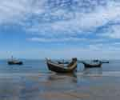
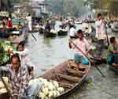
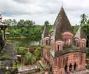

| NAME |
PICTURE |
Details |
| Majar of Banobandhu Sheikh Mujibur Rahman |
|
Majar of Banobandhu Sheikh Mujibur Rahman
Tungipara is the birthplace of national leader Sheikh Mujibur Rahman. He was killed by the traitors in the year 1975, 15th August. He along with all of his family members except two daughters Sheikh Rehana and Sheikh Hasina were killed at a time. Later his dead body was brought to his birthplace Tungupara for commemoration.Ever year we remember the contributions of Bangabandhu in 15th August. It is a very historic and important place for the Bangladeshi people.
|
| Ahsan Monjil |
|
Ahsan Monjil
Palace in Dhaka, Bangladesh
Ahsan Manzil was the official residential palace and seat of the Dhaka Nawab Family. This magnificent building is situated at Kumartoli along the banks of the Buriganga River in Dhaka, Bangladesh.
|
| National Mujium |
|
National Mujium
Bangladesh National Museum
Museum in Dhaka, Bangladesh
The Bangladesh National Museum, originally established on 20 March 1913, albeit under another name, and formally inaugurated on 7 August 1913, was accorded the status of the national museum of Bangladesh on 17 November. |
| Lalbagh Fort |
|
Lalbagh Fort
Lalbagh Fort
Fortress
Lalbagh Fort is an incomplete 17th century Mughal fort complex that stands proudly before the Buriganga River in the southwestern part of Dhaka, Bangladesh.
Address: Lalbagh, Dhaka, Bangladesh
Burials: Pari Bibi, Muhammad Habibur Rahman. |
| Jatio sangsad Bhaban |
|
Jatio Sangsad Bhaban
Jatiyo Sangsad Bhaban
Building in Dhaka, Bangladesh
Jatiyo Sangsad Bhaban or National Parliament House, is the house of the Parliament of Bangladesh, located at Sher-e-Bangla Nagar in the Bangladeshi capital of Dhaka. |
| Sundarbans Mangrove Forest |
|
Sundarbans Mangrove Forest
Sundarbans in the largest mangrove forest on earth and a UNESCO world heritage site. Sundarbans is located in between two neighboring countries - Bangladesh and India. Majority of the forest is located in Bangladesh. |
| Chittagong Hill-Tracts |
|
Chittagong Hill-Tracts
Chittagong Hill-Tracts area is a naturally beautiful place full of beautiful hills. It is home of many tribal group of Bangladesh. This is the best place in Bangladesh for adventure travel. You can trek deep inside the hills for many days here if you can manage permission from the local authority. |
| Srimangal |
|
Srimangal
Srimangal is the tea capital of Bangladesh, located in the north-eastern part of the country. You’ll find lush green tea gardens anywhere you go here. This is one of the few places in the country where if you look around, you may not find any other people anywhere except you. A really nice and calm place. |
| Rangamati Sompuri Mahabhihara |
|
Rangamati Sompuri Mahabhihara
Rangamti is a district of Chittagong Hill-Tracts area. Main reason to visit this place is the Kaptai Lake. It is a naturally beautiful man made lake surrounded by beautiful hills. Best thing to do at Rangamati is enjoying boat ride on the Kaptai Lake for the whole day. |
| St. Martin's Island |
 |
St. Martin's Island
St. Martin's Island is a beautiful coral island of Bay of Bengal in Bangladesh. For the beach lovers, this is the best place to visit in Bangladesh. Local tourists go to visit this island mostly on a day trip. After they leave in the afternoon, it becomes really quiet. |
| Gaur |
|
Gaur
Gaur is a ruined city from ancient and medieval period, located in the India-Bangladesh border. The city was on it’s prime time during 12th to 14th century. It became the capital of the whole Bengal region. It was a very rich and wealthy city in the medieval period, which was finally abandoned because of cholera. |
| Picturesque Jaflong at Sylhet |
|
Picturesque Jaflong at Sylhet
Sylhet is a naturally beautiful place in the north-eastern part of Bangladesh, close to the Meghalaya state of India. It has many beautiful places to visit. Green-water canal Lalakhal, stone collecting area Jaflong, Ratargul swamp forest, and many of it’s tea gardens are the attractions to visit Sylhet. |
| Barisal |
 |
Barisal
Barisal is a unique place located on the heart of Ganges Delta. Life in Barisal is fully based on river. Main attraction to visit Barisal is to experience the unique life and culture of the people of this region. You can visit it’s many floating markets, bazaars, schools, and villages to experience the unique culture of Barisal. |
| Puthia |
 |
Puthia
Puthia is a small village in Rajshahi full of beautiful Hindu temples. Largest number of historical temples in Bangladesh are found in Puthia, some of which are very well maintained. These temples are unique in design. Some of them are ornamented with beautiful terracotta plaques describing epic Hindu stories. |
| Sixty Dome Mosque at Bagerhat |
|
Mosque City Bagerhat
Bagerhat is a city founded in 15th century by a Turkish general, which was formerly known as Khalifatabad. It is full of beautiful historic mosques,among which 60 Dome Mosque is the most famous. This whole city is recognized as a UNESCO world heritage site. |
| Cox's Bazar |
|
Cox's Bazar
Cox's Bazar is the longest unbroken sandy beach in the world, 125 km in length. It is the most popular tourist spot among the locals in Bangladesh. Perfect place to relax in the end of a long trip. |
| Sonargaon |
|
Sonargaon
Sonargaon was the old capital of Bengal in the medieval period. It was a mint capital beside Gaur. Although gone is the heritage of the old capital, there still are some interesting thing to spend a day in Sonargaon. |